1. Introducció
Esta pràctica estudia el control de versions mitjançant una aplicació educativa de JavaScript aplicada al DOM. L'objectiu és relacionar cada funcionalitat amb una branca, uns commits i una integració verificables. Els papers d'usuari 1, usuari 2 i usuari 3 es representen en els missatges de commit, mantenint l'autoria real de Git. La memòria ha de permetre comprovar què s'ha executat, quin resultat s'ha obtingut i quines incidències continuen pendents.
2. Què és Git
Git és un sistema distribuït de control de versions. Cada commit conserva una instantània del projecte i la relaciona amb els commits anteriors. Les branques permeten desenvolupar canvis de manera separada i les fusions’integren els historials. El repositori local conté l'historial; GitHub allotja una còpia remota i aporta eines de revisió, incidències i organització. Abans d'integrar un canvi, convé revisar l'estat de treball, el diff i les proves corresponents.
3. Què és Git Flow
Git Flow és una convenció per organitzar les branques i les publicacions. En esta pràctica, main representa les versions estables i develop concentra el desenvolupament integrat. Les branques feature naixen de develop i hi tornen després de completar una funcionalitat. La branca release/v1.0 permet verificar i preparar la versió, que s'integra en main i develop. Un hotfix naix de main per corregir una versió publicada i també s'incorpora a les dos branques principals. Les etiquetes v1.0 i, quan corresponga, v1.0.1 identifiquen punts concrets de l'historial.
4. Per què utilitzem Git Flow
Utilitzem Git Flow per separar les funcionalitats en curs de les versions preparades per publicar, fer visibles les fases del treball i facilitar la revisió de cada integració. Els commits descriptius expliquen la finalitat dels canvis i les fusions amb historial conservat mostren d'on prové cada funcionalitat. En un projecte docent menut, esta estructura servix sobretot per practicar la coordinació i la traçabilitat; no implica que siga el flux més senzill per a qualsevol projecte.
5. Creació del repositori
Repositori públic creat amb GitHub CLI, autenticat com LucaMZM. Git, gh, Node.js i npm disponibles. HTML5 Boilerplate v9.0.1 descarregat des del repositori oficial, amb llicència conservada.

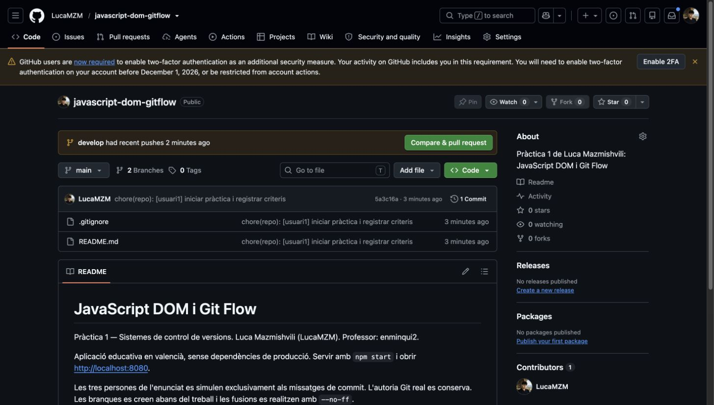
Ordre i eixida registrada 001-init
Registre autèntic; no és una captura de terminal.
Data UTC: 2026-10-26T11:22:43.348679+00:00 $ git init -b main Initialized empty Git repository in /Users/lucamazmi/Desktop/ming/javascript-dom-gitflow/.git/ Codi de retorn: 0 $ git status --short --branch ## No commits yet on main HEAD: fatal: ambiguous argument 'HEAD': unknown revision or path not in the working tree. Use '--' to separate paths from revisions, like this: 'git <command> [<revision>...] -- [<file>...]' HEADObri el registre complet
Ordre i eixida registrada 002-tools
Registre autèntic; no és una captura de terminal.
Data UTC: 2026-10-26T11:22:43.399969+00:00 $ git --version git version 2.52.0 Codi de retorn: 0 $ git status --short --branch ## No commits yet on main ?? evidencias/ HEAD: fatal: ambiguous argument 'HEAD': unknown revision or path not in the working tree. Use '--' to separate paths from revisions, like this: 'git <command> [<revision>...] -- [<file>...]' HEADObri el registre complet
Ordre i eixida registrada 003-create-repository
Registre autèntic; no és una captura de terminal.
Data UTC: 2026-10-26T11:23:02.191707+00:00 $ gh repo create LucaMZM/javascript-dom-gitflow --public --description 'Pràctica 1 de Luca Mazmishvili: JavaScript DOM i Git Flow' --source . --remote origin https://github.com/LucaMZM/javascript-dom-gitflow Codi de retorn: 0 $ git status --short --branch ## No commits yet on main ?? evidencias/ HEAD: fatal: ambiguous argument 'HEAD': unknown revision or path not in the working tree. Use '--' to separate paths from revisions, like this: 'git <command> [<revision>...] -- [<file>...]' HEADObri el registre complet
6. Creació de main i develop
main naix amb el commit 5a3c16a. develop es crea abans de desenvolupar la interfície. La simulació dels tres usuaris es limita als missatges de commit; no es falsifiquen identitats.
Ordre i eixida registrada 005-main-commit
Registre autèntic; no és una captura de terminal.
Data UTC: 2026-10-26T11:23:22.856866+00:00 $ git commit -m 'chore(repo): [usuari1] iniciar pràctica i registrar criteris' [main (root-commit) 5a3c16a] chore(repo): [usuari1] iniciar pràctica i registrar criteris 2 files changed, 23 insertions(+) create mode 100644 .gitignore create mode 100644 README.md Codi de retorn: 0 $ git status --short --branch ## main ?? evidencias/ HEAD: 5a3c16a128bdec2581d556847d29563295eeb698Obri el registre complet
Ordre i eixida registrada 006-develop
Registre autèntic; no és una captura de terminal.
Data UTC: 2026-10-26T11:23:22.907247+00:00 $ git switch -c develop Switched to a new branch 'develop' Codi de retorn: 0 $ git status --short --branch ## develop ?? evidencias/ HEAD: 5a3c16a128bdec2581d556847d29563295eeb698Obri el registre complet
Ordre i eixida registrada 007-before-home
Registre autèntic; no és una captura de terminal.
Data UTC: 2026-10-26T11:23:22.953303+00:00 $ git log --graph --all --decorate --oneline * 5a3c16a (HEAD -> develop, main) chore(repo): [usuari1] iniciar pràctica i registrar criteris Codi de retorn: 0 $ git status --short --branch ## develop ?? evidencias/ HEAD: 5a3c16a128bdec2581d556847d29563295eeb698Obri el registre complet
Ordre i eixida registrada 012-first-push
Registre autèntic; no és una captura de terminal.
Data UTC: 2026-10-26T11:24:04.270059+00:00 $ git push origin main develop To https://github.com/LucaMZM/javascript-dom-gitflow.git * [new branch] main -> main * [new branch] develop -> develop Codi de retorn: 0 $ git status --short --branch ## feature/contingutHTML ?? evidencias/ HEAD: 3c786f42665e6cff7769dff05ccbd953dc4d0e2cObri el registre complet
7. Desenvolupament inicial
Home implementat en develop amb HTML5 Boilerplate adaptat, capçalera visual, navegació, presentació, objectius i footer. Commit 3c786f4. L’enunciat original es localitza durant el procés i es contrasta el seu esquema general.

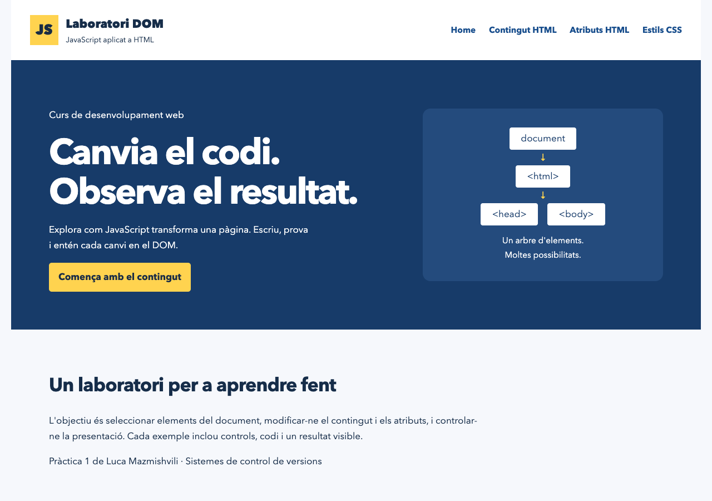
Ordre i eixida registrada 008-home-files
Registre autèntic; no és una captura de terminal.
Data UTC: 2026-10-26T11:24:00.266826+00:00 $ git status --short ?? LICENSE-H5BP.txt ?? app.js ?? boilerplate.css ?? evidencias/ ?? index.html ?? package.json ?? style.css Codi de retorn: 0 $ git status --short --branch ## develop ?? LICENSE-H5BP.txt ?? app.js ?? boilerplate.css ?? evidencias/ ?? index.html ?? package.json ?? style.css HEAD: 5a3c16a128bdec2581d556847d29563295eeb698Obri el registre complet
Ordre i eixida registrada 010-home-commit
Registre autèntic; no és una captura de terminal.
Data UTC: 2026-10-26T11:24:00.437228+00:00 $ git commit -m 'feat(home): [usuari1] crear estructura inicial amb HTML5 Boilerplate' [develop 3c786f4] feat(home): [usuari1] crear estructura inicial amb HTML5 Boilerplate 6 files changed, 281 insertions(+) create mode 100644 LICENSE-H5BP.txt create mode 100644 app.js create mode 100644 boilerplate.css create mode 100644 index.html create mode 100644 package.json create mode 100644 style.css Codi de retorn: 0 $ git status --short --branch ## develop ?? evidencias/ HEAD: 3c786f42665e6cff7769dff05ccbd953dc4d0e2cObri el registre complet
8. Feature de contingut HTML
Branca creada des de develop abans de programar. textContent insereix text literal i innerHTML interpreta només una plantilla fixa de confiança. Commit 3fd18e5. No s’interpreta cap entrada lliure de l’usuari com a HTML.

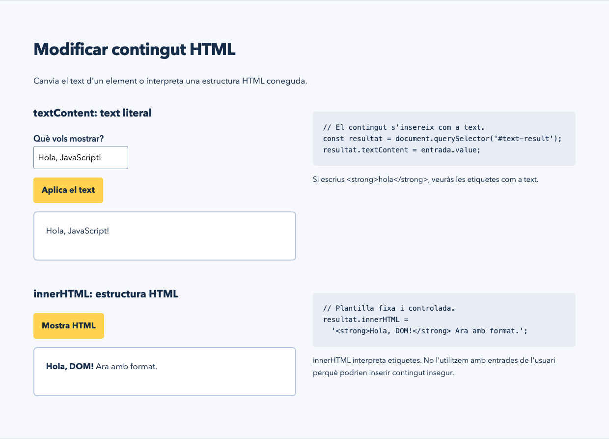
Ordre i eixida registrada 011-content-branch
Registre autèntic; no és una captura de terminal.
Data UTC: 2026-10-26T11:24:00.494772+00:00 $ git switch -c feature/contingutHTML Switched to a new branch 'feature/contingutHTML' Codi de retorn: 0 $ git status --short --branch ## feature/contingutHTML ?? evidencias/ HEAD: 3c786f42665e6cff7769dff05ccbd953dc4d0e2cObri el registre complet
Ordre i eixida registrada 013-content-check
Registre autèntic; no és una captura de terminal.
Data UTC: 2026-10-26T11:24:20.815369+00:00 $ npm run check > javascript-dom-gitflow@0.1.0 check > node --check app.js Codi de retorn: 0 $ git status --short --branch ## feature/contingutHTML M app.js M index.html ?? evidencias/ HEAD: 3c786f42665e6cff7769dff05ccbd953dc4d0e2cObri el registre complet
Ordre i eixida registrada 015-content-commit
Registre autèntic; no és una captura de terminal.
Data UTC: 2026-10-26T11:24:20.929881+00:00 $ git commit -m 'feat(html): [usuari2] afegir exemples de contingut' [feature/contingutHTML 3fd18e5] feat(html): [usuari2] afegir exemples de contingut 2 files changed, 15 insertions(+), 1 deletion(-) Codi de retorn: 0 $ git status --short --branch ## feature/contingutHTML ?? evidencias/ HEAD: 3fd18e5092d54ca47487cc9a40b53fa459125ca3Obri el registre complet
Ordre i eixida registrada 016-before-content-merge
Registre autèntic; no és una captura de terminal.
Data UTC: 2026-10-26T11:24:20.978922+00:00 $ git log --graph --all --decorate --oneline * 3fd18e5 (HEAD -> feature/contingutHTML) feat(html): [usuari2] afegir exemples de contingut * 3c786f4 (origin/develop, develop) feat(home): [usuari1] crear estructura inicial amb HTML5 Boilerplate * 5a3c16a (origin/main, main) chore(repo): [usuari1] iniciar pràctica i registrar criteris Codi de retorn: 0 $ git status --short --branch ## feature/contingutHTML ?? evidencias/ HEAD: 3fd18e5092d54ca47487cc9a40b53fa459125ca3Obri el registre complet
Ordre i eixida registrada 018-content-merge
Registre autèntic; no és una captura de terminal.
Data UTC: 2026-10-26T11:24:53.709026+00:00 $ git merge --no-ff feature/contingutHTML -m 'merge(html): [usuari2] integrar contingut HTML' Merge made by the 'ort' strategy. app.js | 10 ++++++++++ index.html | 6 +++++- 2 files changed, 15 insertions(+), 1 deletion(-) Codi de retorn: 0 $ git status --short --branch ## develop ?? evidencias/ HEAD: 70ce7aac4da5f88ea0b487b09522b443587ed5eeObri el registre complet
9. Feature d’atributs HTML
setAttribute actualitza title, getAttribute en llig el valor i disabled alterna una propietat booleana. Commit 22bf601. La fusió conserva un commit amb dos pares.

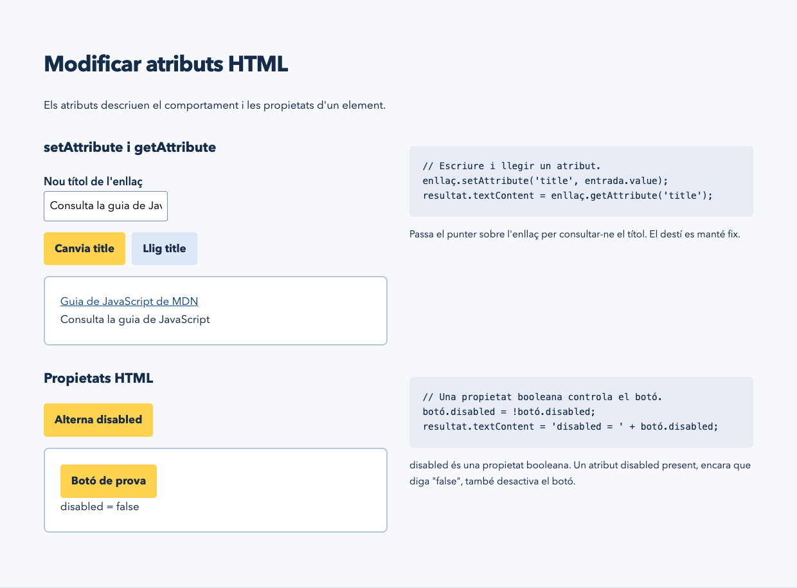
Ordre i eixida registrada 019-attrs-branch
Registre autèntic; no és una captura de terminal.
Data UTC: 2026-10-26T11:24:53.759559+00:00 $ git switch -c feature/atributsHTML Switched to a new branch 'feature/atributsHTML' Codi de retorn: 0 $ git status --short --branch ## feature/atributsHTML ?? evidencias/ HEAD: 70ce7aac4da5f88ea0b487b09522b443587ed5eeObri el registre complet
Ordre i eixida registrada 020-attrs-check
Registre autèntic; no és una captura de terminal.
Data UTC: 2026-10-26T11:24:54.218035+00:00 $ npm run check > javascript-dom-gitflow@0.1.0 check > node --check app.js Codi de retorn: 0 $ git status --short --branch ## feature/atributsHTML M app.js M index.html ?? evidencias/ HEAD: 70ce7aac4da5f88ea0b487b09522b443587ed5eeObri el registre complet
Ordre i eixida registrada 022-attrs-commit
Registre autèntic; no és una captura de terminal.
Data UTC: 2026-10-26T11:24:54.318800+00:00 $ git commit -m 'feat(attributes): [usuari2] implementar atributs HTML' [feature/atributsHTML 22bf601] feat(attributes): [usuari2] implementar atributs HTML 2 files changed, 18 insertions(+), 1 deletion(-) Codi de retorn: 0 $ git status --short --branch ## feature/atributsHTML ?? evidencias/ HEAD: 22bf60102f9590b736c69a30648cb65f84e17c10Obri el registre complet
Ordre i eixida registrada 023-before-attrs-merge
Registre autèntic; no és una captura de terminal.
Data UTC: 2026-10-26T11:24:54.364231+00:00 $ git log --graph --all --decorate --oneline * 22bf601 (HEAD -> feature/atributsHTML) feat(attributes): [usuari2] implementar atributs HTML * 70ce7aa (develop) merge(html): [usuari2] integrar contingut HTML |\ | * 3fd18e5 (feature/contingutHTML) feat(html): [usuari2] afegir exemples de contingut |/ * 3c786f4 (origin/develop) feat(home): [usuari1] crear estructura inicial amb HTML5 Boilerplate * 5a3c16a (origin/main, main) chore(repo): [usuari1] iniciar pràctica i registrar criteris Codi de retorn: 0 $ git status --short --branch ## feature/atributsHTML ?? evidencias/ HEAD: 22bf60102f9590b736c69a30648cb65f84e17c10Obri el registre complet
Ordre i eixida registrada 025-attrs-merge
Registre autèntic; no és una captura de terminal.
Data UTC: 2026-10-26T11:25:18.061714+00:00 $ git merge --no-ff feature/atributsHTML -m 'merge(attributes): [usuari2] integrar atributs HTML' Merge made by the 'ort' strategy. app.js | 13 +++++++++++++ index.html | 6 +++++- 2 files changed, 18 insertions(+), 1 deletion(-) Codi de retorn: 0 $ git status --short --branch ## develop ?? evidencias/ HEAD: d4b7b6ffbd94a84ef15f2d2629d0fdb0c0baacd5Obri el registre complet
10. Feature d’estils CSS
Color i fontSize es modifiquen amb style; classList alterna el ressaltat. El botó de restabliment recupera l’estat inicial i aria-pressed reflecteix l’estat. Commit 5238368.

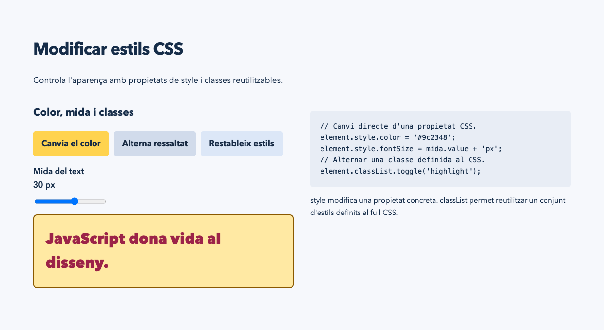
Ordre i eixida registrada 026-css-branch
Registre autèntic; no és una captura de terminal.
Data UTC: 2026-10-26T11:25:18.110358+00:00 $ git switch -c feature/estilsCSS Switched to a new branch 'feature/estilsCSS' Codi de retorn: 0 $ git status --short --branch ## feature/estilsCSS ?? evidencias/ HEAD: d4b7b6ffbd94a84ef15f2d2629d0fdb0c0baacd5Obri el registre complet
Ordre i eixida registrada 027-css-check
Registre autèntic; no és una captura de terminal.
Data UTC: 2026-10-26T11:25:18.359696+00:00 $ npm run check > javascript-dom-gitflow@0.1.0 check > node --check app.js Codi de retorn: 0 $ git status --short --branch ## feature/estilsCSS M app.js M index.html ?? evidencias/ HEAD: d4b7b6ffbd94a84ef15f2d2629d0fdb0c0baacd5Obri el registre complet
Ordre i eixida registrada 029-css-commit
Registre autèntic; no és una captura de terminal.
Data UTC: 2026-10-26T11:25:18.473881+00:00 $ git commit -m 'feat(css): [usuari3] implementar canvis d estil' [feature/estilsCSS 5238368] feat(css): [usuari3] implementar canvis d estil 2 files changed, 26 insertions(+), 1 deletion(-) Codi de retorn: 0 $ git status --short --branch ## feature/estilsCSS ?? evidencias/ HEAD: 5238368ff49e33ef20c94e8d7b3271e2e557124eObri el registre complet
Ordre i eixida registrada 030-before-css-merge
Registre autèntic; no és una captura de terminal.
Data UTC: 2026-10-26T11:25:18.524616+00:00 $ git log --graph --all --decorate --oneline * 5238368 (HEAD -> feature/estilsCSS) feat(css): [usuari3] implementar canvis d estil * d4b7b6f (develop) merge(attributes): [usuari2] integrar atributs HTML |\ | * 22bf601 (feature/atributsHTML) feat(attributes): [usuari2] implementar atributs HTML |/ * 70ce7aa merge(html): [usuari2] integrar contingut HTML |\ | * 3fd18e5 (feature/contingutHTML) feat(html): [usuari2] afegir exemples de contingut |/ * 3c786f4 (origin/develop) feat(home): [usuari1] crear estructura inicial amb HTML5 Boilerplate * 5a3c16a (origin/main, main) chore(repo): [usuari1] iniciar pràctica i registrar criteris Codi de retorn: 0 $ git status --short --branch ## feature/estilsCSS ?? evidencias/ HEAD: 5238368ff49e33ef20c94e8d7b3271e2e557124eObri el registre complet
Ordre i eixida registrada 032-css-merge
Registre autèntic; no és una captura de terminal.
Data UTC: 2026-10-26T11:25:37.714240+00:00 $ git merge --no-ff feature/estilsCSS -m 'merge(css): [usuari3] integrar estils CSS' Merge made by the 'ort' strategy. app.js | 21 +++++++++++++++++++++ index.html | 6 +++++- 2 files changed, 26 insertions(+), 1 deletion(-) Codi de retorn: 0 $ git status --short --branch ## develop ?? evidencias/ HEAD: 8201996d3e4fac123ca35981c22f6a85cbddc805Obri el registre complet
11. Fusió de les funcionalitats
Les tres features s’integren amb --no-ff: 70ce7aa, d4b7b6f i 8201996. Les branques es mantenen publicades perquè el professor puga inspeccionar-les.
Ordre i eixida registrada 018-content-merge
Registre autèntic; no és una captura de terminal.
Data UTC: 2026-10-26T11:24:53.709026+00:00 $ git merge --no-ff feature/contingutHTML -m 'merge(html): [usuari2] integrar contingut HTML' Merge made by the 'ort' strategy. app.js | 10 ++++++++++ index.html | 6 +++++- 2 files changed, 15 insertions(+), 1 deletion(-) Codi de retorn: 0 $ git status --short --branch ## develop ?? evidencias/ HEAD: 70ce7aac4da5f88ea0b487b09522b443587ed5eeObri el registre complet
Ordre i eixida registrada 025-attrs-merge
Registre autèntic; no és una captura de terminal.
Data UTC: 2026-10-26T11:25:18.061714+00:00 $ git merge --no-ff feature/atributsHTML -m 'merge(attributes): [usuari2] integrar atributs HTML' Merge made by the 'ort' strategy. app.js | 13 +++++++++++++ index.html | 6 +++++- 2 files changed, 18 insertions(+), 1 deletion(-) Codi de retorn: 0 $ git status --short --branch ## develop ?? evidencias/ HEAD: d4b7b6ffbd94a84ef15f2d2629d0fdb0c0baacd5Obri el registre complet
Ordre i eixida registrada 032-css-merge
Registre autèntic; no és una captura de terminal.
Data UTC: 2026-10-26T11:25:37.714240+00:00 $ git merge --no-ff feature/estilsCSS -m 'merge(css): [usuari3] integrar estils CSS' Merge made by the 'ort' strategy. app.js | 21 +++++++++++++++++++++ index.html | 6 +++++- 2 files changed, 26 insertions(+), 1 deletion(-) Codi de retorn: 0 $ git status --short --branch ## develop ?? evidencias/ HEAD: 8201996d3e4fac123ca35981c22f6a85cbddc805Obri el registre complet
Ordre i eixida registrada 054-final-graph
Registre autèntic; no és una captura de terminal.
Data UTC: 2026-10-26T11:27:21.685228+00:00 $ git log --graph --all --decorate --oneline * 80e5ffb (HEAD -> develop) merge(hotfix): [usuari1] integrar millores en develop |\ * \ 6d9b2ba merge(release): [usuari1] retornar v1.0 a develop |\ \ | | | * d0c5a2c (tag: v1.0.1, main) merge(hotfix): [usuari1] integrar millores de contingut en main | | | |\ | | | |/ | | |/| | | * | 51485c8 (hotfix/milloresV_1_0) fix(html): [usuari1] restablir contingut i comptar caràcters | | |/ | | * 3c277c4 (tag: v1.0) merge(release): [usuari1] publicar versió 1.0 | | |\ | | |/ | |/| | * | 20f32a0 (release/v1.0) chore(release): [usuari1] preparar v1.0 i afegir favicon local |/ / * | 8201996 merge(css): [usuari3] integrar estils CSS |\ \ | * | 5238368 (feature/estilsCSS) feat(css): [usuari3] implementar canvis d estil |/ / * | d4b7b6f merge(attributes): [usuari2] integrar atributs HTML |\ \ | * | 22bf601 (feature/atributsHTML) feat(attributes): [usuari2] implementar atributs HTML |/ / * | 70ce7aa merge(html): [usuari2] integrar contingut HTML |\ \ | * | 3fd18e5 (feature/contingutHTML) feat(html): [usuari2] afegir exemples de contingut |/ / * / 3c786f4 (origin/develop) feat(home): [usuari1] crear estructura inicial amb HTML5 Boilerplate |/ * 5a3c16a (origin/main) chore(repo): [usuari1] iniciar pràctica i registrar criteris Codi de retorn: 0 $ git status --short --branch ## develop ?? evidencias/ ?? tests/ HEAD: 80e5ffbe85a85d8612009378d650d01953c2d733Obri el registre complet
12. Release v1.0
release/v1.0 prepara package.json i el favicon local. Integració en main (3c277c4) i develop (6d9b2ba), etiqueta anotada v1.0 i GitHub Release publicada. La preparació s’ha identificat com usuari1; l’enunciat original assignava aquesta fase a usuari3. Es conserva el registre real sense reescriure autoria ni historial.

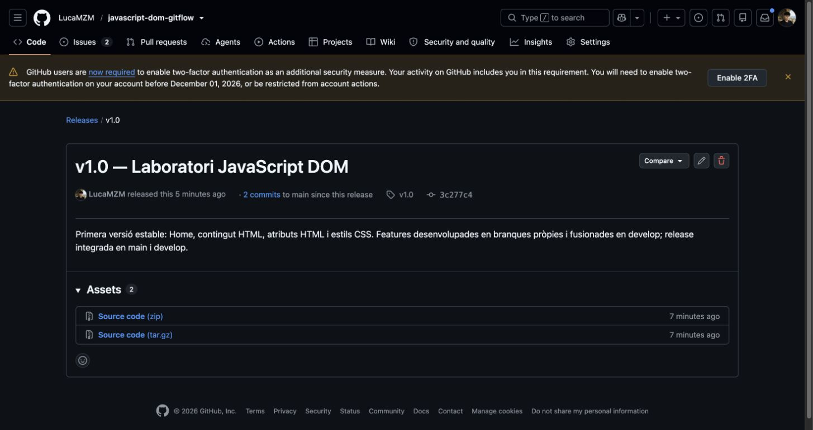
Ordre i eixida registrada 033-release-branch
Registre autèntic; no és una captura de terminal.
Data UTC: 2026-10-26T11:25:37.767771+00:00 $ git switch -c release/v1.0 Switched to a new branch 'release/v1.0' Codi de retorn: 0 $ git status --short --branch ## release/v1.0 ?? evidencias/ HEAD: 8201996d3e4fac123ca35981c22f6a85cbddc805Obri el registre complet
Ordre i eixida registrada 034-release-check
Registre autèntic; no és una captura de terminal.
Data UTC: 2026-10-26T11:25:38.046409+00:00 $ npm run check > javascript-dom-gitflow@1.0.0 check > node --check app.js Codi de retorn: 0 $ git status --short --branch ## release/v1.0 M index.html M package.json ?? evidencias/ ?? favicon.svg HEAD: 8201996d3e4fac123ca35981c22f6a85cbddc805Obri el registre complet
Ordre i eixida registrada 036-release-commit
Registre autèntic; no és una captura de terminal.
Data UTC: 2026-10-26T11:25:38.151094+00:00 $ git commit -m 'chore(release): [usuari1] preparar v1.0 i afegir favicon local' [release/v1.0 20f32a0] chore(release): [usuari1] preparar v1.0 i afegir favicon local 3 files changed, 11 insertions(+), 2 deletions(-) create mode 100644 favicon.svg Codi de retorn: 0 $ git status --short --branch ## release/v1.0 ?? evidencias/ HEAD: 20f32a051dc3ecdbb946a789f3cfc75dd6e73259Obri el registre complet
Ordre i eixida registrada 039-release-main
Registre autèntic; no és una captura de terminal.
Data UTC: 2026-10-26T11:25:48.894701+00:00 $ git merge --no-ff release/v1.0 -m 'merge(release): [usuari1] publicar versió 1.0' Merge made by the 'ort' strategy. LICENSE-H5BP.txt | 19 +++++ app.js | 46 +++++++++++ boilerplate.css | 247 +++++++++++++++++++++++++++++++++++++++++++++++++++++++ favicon.svg | 1 + index.html | 23 ++++++ package.json | 9 ++ style.css | 1 + 7 files changed, 346 insertions(+) create mode 100644 LICENSE-H5BP.txt create mode 100644 app.js create mode 100644 boilerplate.css create mode 100644 favicon.svg create mode 100644 index.html create mode 100644 package.json create mode 100644 style.css Codi de retorn: 0 $ git status --short --branch ## main ?? evidencias/ HEAD: 3c277c4ae97dc6fa146a7110fd2501794b6852c0Obri el registre complet
Ordre i eixida registrada 040-tag
Registre autèntic; no és una captura de terminal.
Data UTC: 2026-10-26T11:25:48.945892+00:00 $ git tag -a v1.0 -m 'Versió 1.0 del laboratori DOM' Codi de retorn: 0 $ git status --short --branch ## main ?? evidencias/ HEAD: 3c277c4ae97dc6fa146a7110fd2501794b6852c0Obri el registre complet
Ordre i eixida registrada 042-release-develop
Registre autèntic; no és una captura de terminal.
Data UTC: 2026-10-26T11:25:49.089372+00:00 $ git merge --no-ff release/v1.0 -m 'merge(release): [usuari1] retornar v1.0 a develop' Merge made by the 'ort' strategy. favicon.svg | 1 + index.html | 2 +- package.json | 10 +++++++++- 3 files changed, 11 insertions(+), 2 deletions(-) create mode 100644 favicon.svg Codi de retorn: 0 $ git status --short --branch ## develop ?? evidencias/ HEAD: 6d9b2baec876e4c0e72a0d969baa88811e7d9fdeObri el registre complet
Ordre i eixida registrada 058-release-github
Registre autèntic; no és una captura de terminal.
Data UTC: 2026-10-26T11:27:30.779524+00:00 $ gh release create v1.0 --repo LucaMZM/javascript-dom-gitflow --title 'v1.0 — Laboratori JavaScript DOM' --notes 'Primera versió estable: Home, contingut HTML, atributs HTML i estils CSS. Features desenvolupades en branques pròpies i fusionades en develop; release integrada en main i develop.' https://github.com/LucaMZM/javascript-dom-gitflow/releases/tag/v1.0 Codi de retorn: 0 $ git status --short --branch ## main ?? evidencias/ ?? tests/ HEAD: d0c5a2c057e82b03b7e5cec169aab86a4c0eb839Obri el registre complet
13. Hotfix
hotfix/milloresV_1_0 es crea des de main. La millora real incorpora Restableix contingut i comptador Unicode. Commit 51485c8. Fusió doble en main (d0c5a2c) i develop (80e5ffb), etiqueta v1.0.1; es conserva v1.0.

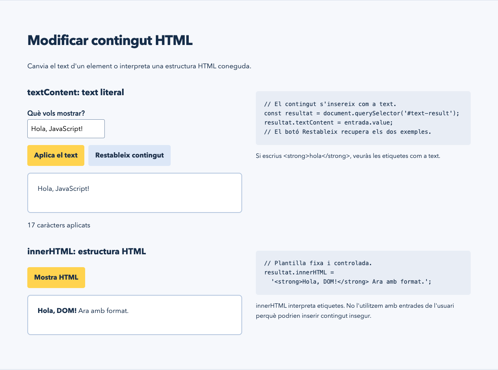
Ordre i eixida registrada 044-hotfix-branch
Registre autèntic; no és una captura de terminal.
Data UTC: 2026-10-26T11:25:49.212615+00:00 $ git switch -c hotfix/milloresV_1_0 Switched to a new branch 'hotfix/milloresV_1_0' Codi de retorn: 0 $ git status --short --branch ## hotfix/milloresV_1_0 ?? evidencias/ HEAD: 3c277c4ae97dc6fa146a7110fd2501794b6852c0Obri el registre complet
Ordre i eixida registrada 045-hotfix-check
Registre autèntic; no és una captura de terminal.
Data UTC: 2026-10-26T11:26:01.524434+00:00 $ npm run check > javascript-dom-gitflow@1.0.1 check > node --check app.js Codi de retorn: 0 $ git status --short --branch ## hotfix/milloresV_1_0 M app.js M index.html M package.json ?? evidencias/ HEAD: 3c277c4ae97dc6fa146a7110fd2501794b6852c0Obri el registre complet
Ordre i eixida registrada 047-hotfix-commit
Registre autèntic; no és una captura de terminal.
Data UTC: 2026-10-26T11:26:01.642686+00:00 $ git commit -m 'fix(html): [usuari1] restablir contingut i comptar caràcters' [hotfix/milloresV_1_0 51485c8] fix(html): [usuari1] restablir contingut i comptar caràcters 3 files changed, 15 insertions(+), 4 deletions(-) Codi de retorn: 0 $ git status --short --branch ## hotfix/milloresV_1_0 ?? evidencias/ HEAD: 51485c8df1d333f2d9be474d88403067acdfd8f4Obri el registre complet
Ordre i eixida registrada 048-hotfix-diff
Registre autèntic; no és una captura de terminal.
Data UTC: 2026-10-26T11:26:01.689241+00:00
$ git diff v1.0 HEAD -- app.js index.html package.json
diff --git a/app.js b/app.js
index a89b40c..1f6a700 100644
--- a/app.js
+++ b/app.js
@@ -4,7 +4,9 @@
const select = (selector) => document.querySelector(selector);
select('#apply-text').addEventListener('click', () => {
// textContent evita interpretar HTML escrit per l'usuari.
- select('#text-result').textContent = select('#new-text').value;
+ const text = select('#new-text').value;
+ select('#text-result').textContent = text;
+ select('#text-count').textContent = Array.from(text).length + ' caràcters aplicats';
});
select('#apply-html').addEventListener('click', () => {
// Només s'interpreta una plantilla fixa de confiança.
@@ -44,3 +46,11 @@ select('#reset-style').addEventListener('click', () => {
select('#size-result').textContent = '20 px';
select('#class-change').setAttribute('aria-pressed', 'false');
});
+
+// Hotfix: repetir l'experiment sense recarregar la pàgina.
+select('#reset-content').addEventListener('click', () => {
+ select('#new-text').value = 'Hola, JavaScript!';
+ select('#text-result').textContent = 'Este text canviarà.';
+ select('#html-result').textContent = 'Encara no hi ha format.';
+ select('#text-count').textContent = '0 caràcters aplicats';
+});
diff --git a/index.html b/index.html
index 69b8a55..4cd95e0 100644
--- a/index.html
+++ b/index.html
@@ -5,9 +5,10 @@
<header><div class="brand"><span class="js-mark" aria-hidden="true">JS</span><span>Laboratori DOM<small>JavaScript aplicat a HTML</small></span></div><nav aria-label="Navegació principal"><a href="#home">Home</a><a href="#contingut">Contingut HTML</a><a href="#atributs">Atributs HTML</a><a href="#estils">Estils CSS</a></nav></header>
<main id="principal"><section class="hero" id="home"><div><p>Curs de desenvolupament web</p><h1>Canvia el codi.<br>Observa el resultat.</h1><p>Explora com JavaScript transforma una pàgina. Escriu, prova i entén cada canvi en el DOM.</p><a class="button" href="#contingut">Comença amb el contingut</a></div><div class="dom-visual" aria-label="Esquema del DOM"><span>document</span><i>↓</i><span><html></span><i>↓</i><div><span><head></span><span><body></span></div><p>Un arbre d'elements.<br>Moltes possibilitats.</p></div></section>
<section class="intro"><h2>Un laboratori per a aprendre fent</h2><p>L'objectiu és seleccionar elements del document, modificar-ne el contingut i els atributs, i controlar-ne la presentació. Cada exemple inclou controls, codi i un resultat visible.</p><p>Pràctica 1 de Luca Mazmishvili · Sistemes de control de versions</p></section>
-<section class="lesson" id="contingut"><h2>Modificar contingut HTML</h2><p>Canvia el text d'un element o interpreta una estructura HTML coneguda.</p><article class="example"><div><h3>textContent: text literal</h3><label for="new-text">Què vols mostrar?</label><input id="new-text" value="Hola, JavaScript!" maxlength="160"><div class="controls"><button id="apply-text">Aplica el text</button></div><p class="output" id="text-result" aria-live="polite">Este text canviarà.</p></div><div><pre><code>// El contingut s'insereix com a text.
+<section class="lesson" id="contingut"><h2>Modificar contingut HTML</h2><p>Canvia el text d'un element o interpreta una estructura HTML coneguda.</p><article class="example"><div><h3>textContent: text literal</h3><label for="new-text">Què vols mostrar?</label><input id="new-text" value="Hola, JavaScript!" maxlength="160"><div class="controls"><button id="apply-text">Aplica el text</button><button id="reset-content" class="secondary">Restableix contingut</button></div><p class="output" id="text-result" aria-live="polite">Este text canviarà.</p><output id="text-count" aria-live="polite">0 caràcters aplicats</output></div><div><pre><code>// El contingut s'insereix com a text.
const resultat = document.querySelector('#text-result');
-resultat.textContent = entrada.value;</code></pre><p class="note">Si escrius <strong>hola</strong>, veuràs les etiquetes com a text.</p></div></article><article class="example"><div><h3>innerHTML: estructura HTML</h3><div class="controls"><button id="apply-html">Mostra HTML</button></div><div class="output" id="html-result" aria-live="polite">Encara no hi ha format.</div></div><div><pre><code>// Plantilla fixa i controlada.
+resultat.textContent = entrada.value;
+// El botó Restableix recupera els dos exemples.</code></pre><p class="note">Si escrius <strong>hola</strong>, veuràs les etiquetes com a text.</p></div></article><article class="example"><div><h3>innerHTML: estructura HTML</h3><div class="controls"><button id="apply-html">Mostra HTML</button></div><div class="output" id="html-result" aria-live="polite">Encara no hi ha format.</div></div><div><pre><code>// Plantilla fixa i controlada.
resultat.innerHTML =
'<strong>Hola, DOM!</strong> Ara amb format.';</code></pre><p class="note">innerHTML interpreta etiquetes. No l'utilitzem amb entrades de l'usuari perquè podrien inserir contingut insegur.</p></div></article></section>
<section class="lesson" id="atributs"><h2>Modificar atributs HTML</h2><p>Els atributs descriuen el comportament i les propietats d'un element.</p><article class="example"><div><h3>setAttribute i getAttribute</h3><label for="attribute-text">Nou títol de l'enllaç</label><input id="attribute-text" value="Consulta la guia de JavaScript" maxlength="120"><div class="controls"><button id="set-attr">Canvia title</button><button id="read-attr" class="secondary">Llig title</button></div><div class="output"><a id="demo-link" href="https://developer.mozilla.org/ca/docs/Web/JavaScript" title="Guia JavaScript">Guia de JavaScript de MDN</a><output id="attr-result" aria-live="polite">Llig l'atribut per veure'n el valor.</output></div></div><div><pre><code>// Escriure i llegir un atribut.
diff --git a/package.json b/package.json
index ab93e0c..228df21 100644
--- a/package.json
+++ b/package.json
@@ -1,6 +1,6 @@
{
"name": "javascript-dom-gitflow",
- "version": "1.0.0",
+ "version": "1.0.1",
"private": true,
"scripts": {
"start": "python3 -m http.server 8080",
Codi de retorn: 0
$ git status --short --branch
## hotfix/milloresV_1_0
?? evidencias/
HEAD: 51485c8df1d333f2d9be474d88403067acdfd8f4
Obri el registre completOrdre i eixida registrada 050-hotfix-main
Registre autèntic; no és una captura de terminal.
Data UTC: 2026-10-26T11:27:21.487630+00:00 $ git merge --no-ff hotfix/milloresV_1_0 -m 'merge(hotfix): [usuari1] integrar millores de contingut en main' Merge made by the 'ort' strategy. app.js | 12 +++++++++++- index.html | 5 +++-- package.json | 2 +- 3 files changed, 15 insertions(+), 4 deletions(-) Codi de retorn: 0 $ git status --short --branch ## main ?? evidencias/ ?? tests/ HEAD: d0c5a2c057e82b03b7e5cec169aab86a4c0eb839Obri el registre complet
Ordre i eixida registrada 051-hotfix-tag
Registre autèntic; no és una captura de terminal.
Data UTC: 2026-10-26T11:27:21.531652+00:00 $ git tag -a v1.0.1 -m 'Hotfix: restabliment de contingut i recompte Unicode' Codi de retorn: 0 $ git status --short --branch ## main ?? evidencias/ ?? tests/ HEAD: d0c5a2c057e82b03b7e5cec169aab86a4c0eb839Obri el registre complet
Ordre i eixida registrada 053-hotfix-develop
Registre autèntic; no és una captura de terminal.
Data UTC: 2026-10-26T11:27:21.637505+00:00 $ git merge --no-ff hotfix/milloresV_1_0 -m 'merge(hotfix): [usuari1] integrar millores en develop' Merge made by the 'ort' strategy. app.js | 12 +++++++++++- index.html | 5 +++-- package.json | 2 +- 3 files changed, 15 insertions(+), 4 deletions(-) Codi de retorn: 0 $ git status --short --branch ## develop ?? evidencias/ ?? tests/ HEAD: 80e5ffbe85a85d8612009378d650d01953c2d733Obri el registre complet
Ordre i eixida registrada 059-hotfix-release
Registre autèntic; no és una captura de terminal.
Data UTC: 2026-10-26T11:27:31.702971+00:00 $ gh release create v1.0.1 --repo LucaMZM/javascript-dom-gitflow --title 'v1.0.1 — Millores del contingut HTML' --notes 'Hotfix real des de main: restabliment dels exemples de contingut i recompte Unicode del text aplicat. Integrat en main i develop; es conserva v1.0.' https://github.com/LucaMZM/javascript-dom-gitflow/releases/tag/v1.0.1 Codi de retorn: 0 $ git status --short --branch ## main ?? evidencias/ ?? tests/ HEAD: d0c5a2c057e82b03b7e5cec169aab86a4c0eb839Obri el registre complet
14. GitHub Project
Project creat des de GitHub web després de descartar l ampliació del permís project de la CLI. Les huit issues s importen des del repositori. Estats Todo, In Progress i Done. Cada issue inclou responsable simulat, descripció, branca i, quan existeix, commit. Project: https://github.com/users/LucaMZM/projects/1.

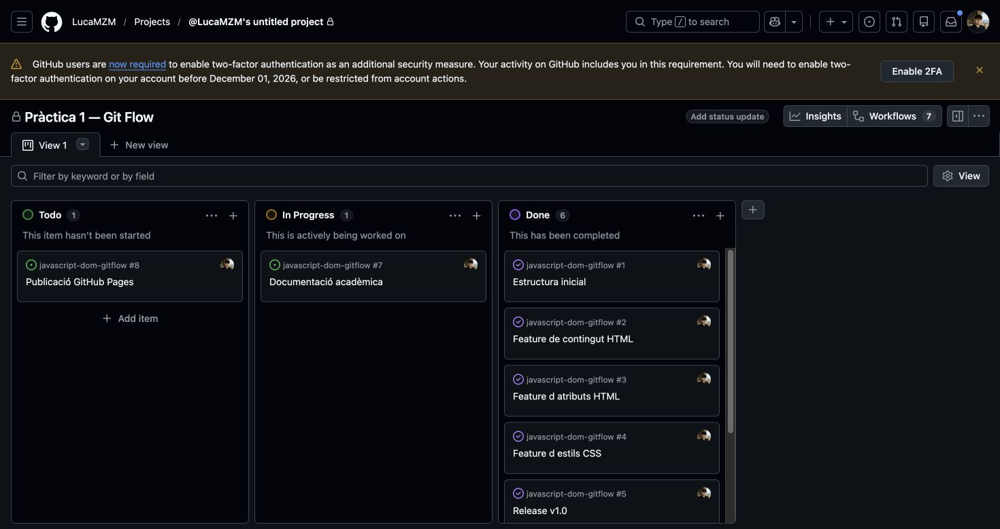
15. Accés del professor al projecte
enminqui2 apareix en Manage access amb rol Read. La captura mostra dos membres. Accés de lectura concedit mitjançant Invite; la interfície no mostra una acceptació separada, per tant no s’afirma que s’haja acceptat. No s’ha ampliat l’accés al repositori.

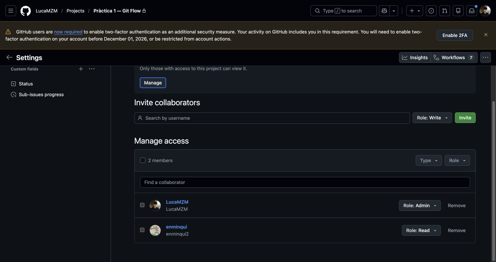
16. Captures del procés
Les imatges són captures reals de navegador. Les operacions de terminal es mostren com a eixida registrada autèntica, no com a captures de terminal. Cada registre inclou data UTC, ordre exacta, codi de retorn, estat Git i HEAD. Els registres anteriors a la primera confirmació mostren correctament que HEAD encara no existeix. El canvi de branca del registre 068 va fallar per un registre modificat; es va recuperar amb worktrees, tal com mostra 073.
Ordre i eixida registrada 054-final-graph
Registre autèntic; no és una captura de terminal.
Data UTC: 2026-10-26T11:27:21.685228+00:00 $ git log --graph --all --decorate --oneline * 80e5ffb (HEAD -> develop) merge(hotfix): [usuari1] integrar millores en develop |\ * \ 6d9b2ba merge(release): [usuari1] retornar v1.0 a develop |\ \ | | | * d0c5a2c (tag: v1.0.1, main) merge(hotfix): [usuari1] integrar millores de contingut en main | | | |\ | | | |/ | | |/| | | * | 51485c8 (hotfix/milloresV_1_0) fix(html): [usuari1] restablir contingut i comptar caràcters | | |/ | | * 3c277c4 (tag: v1.0) merge(release): [usuari1] publicar versió 1.0 | | |\ | | |/ | |/| | * | 20f32a0 (release/v1.0) chore(release): [usuari1] preparar v1.0 i afegir favicon local |/ / * | 8201996 merge(css): [usuari3] integrar estils CSS |\ \ | * | 5238368 (feature/estilsCSS) feat(css): [usuari3] implementar canvis d estil |/ / * | d4b7b6f merge(attributes): [usuari2] integrar atributs HTML |\ \ | * | 22bf601 (feature/atributsHTML) feat(attributes): [usuari2] implementar atributs HTML |/ / * | 70ce7aa merge(html): [usuari2] integrar contingut HTML |\ \ | * | 3fd18e5 (feature/contingutHTML) feat(html): [usuari2] afegir exemples de contingut |/ / * / 3c786f4 (origin/develop) feat(home): [usuari1] crear estructura inicial amb HTML5 Boilerplate |/ * 5a3c16a (origin/main) chore(repo): [usuari1] iniciar pràctica i registrar criteris Codi de retorn: 0 $ git status --short --branch ## develop ?? evidencias/ ?? tests/ HEAD: 80e5ffbe85a85d8612009378d650d01953c2d733Obri el registre complet
Ordre i eixida registrada 068-develop-docs
Registre autèntic; no és una captura de terminal.
Data UTC: 2026-10-26T11:32:21.223329+00:00 $ git switch develop error: Your local changes to the following files would be overwritten by checkout: evidencias/registre.jsonl Please commit your changes or stash them before you switch branches. Aborting Codi de retorn: 1 $ git status --short --branch ## main M evidencias/registre.jsonl ?? evidencias/terminal/066-evidence-stage.txt ?? evidencias/terminal/067-evidence-commit.txt HEAD: 215e0fdc9fda482bfca97bb7f0d06d72d2f9c478Obri el registre complet
Ordre i eixida registrada 071-pages-worktree
Registre autèntic; no és una captura de terminal.
Data UTC: 2026-10-26T11:32:45.315128+00:00 $ git worktree add --orphan -b gh-pages /Users/lucamazmi/Desktop/ming/javascript-dom-gitflow-pages Preparing worktree (new branch 'gh-pages') Codi de retorn: 0 $ git status --short --branch ## main HEAD: 40d3cd653bd3f151c3de38d9619be119407dd4b5Obri el registre complet
Ordre i eixida registrada 072-develop-worktree
Registre autèntic; no és una captura de terminal.
Data UTC: 2026-10-26T11:32:45.383648+00:00 $ git worktree add /Users/lucamazmi/Desktop/ming/javascript-dom-gitflow-develop develop Preparing worktree (checking out 'develop') HEAD is now at 80e5ffb merge(hotfix): [usuari1] integrar millores en develop Codi de retorn: 0 $ git status --short --branch ## main M evidencias/registre.jsonl ?? evidencias/terminal/071-pages-worktree.txt HEAD: 40d3cd653bd3f151c3de38d9619be119407dd4b5Obri el registre complet
Ordre i eixida registrada 073-sync-docs-correct
Registre autèntic; no és una captura de terminal.
Data UTC: 2026-10-26T11:32:45.483947+00:00 $ git -C /Users/lucamazmi/Desktop/ming/javascript-dom-gitflow-develop merge --no-ff main -m 'merge(docs): [usuari1] sincronitzar proves i evidències' Merge made by the 'ort' strategy. README.md | 14 +- evidencias/aplicacion/03-home.png | Bin 0 -> 88831 bytes evidencias/aplicacion/05-contingut.png | Bin 0 -> 83868 bytes evidencias/aplicacion/08-atributs.png | Bin 0 -> 92181 bytes evidencias/aplicacion/11-estils.png | Bin 0 -> 72568 bytes evidencias/aplicacion/18-hotfix.png | Bin 0 -> 94480 bytes evidencias/aplicacion/qa.json | 90 +++++++++++ evidencias/git/plantilla-h5bp.html | 33 ++++ evidencias/github/01-repositori.png | Bin 0 -> 121147 bytes evidencias/github/21-project-proces.png | Bin 0 -> 92740 bytes evidencias/github/21-project-proces.txt | 187 ++++++++++++++++++++++ evidencias/github/22-acces-professor.png | Bin 0 -> 82612 bytes evidencias/github/22-acces-professor.txt | 116 ++++++++++++++ evidencias/github/issue-1.txt | 10 ++ evidencias/github/issue-2.txt | 10 ++ evidencias/github/issue-3.txt | 10 ++ evidencias/github/issue-4.txt | 10 ++ evidencias/github/issue-5.txt | 10 ++ evidencias/github/issue-6.txt | 10 ++ evidencias/github/issue-7.txt | 9 ++ evidencias/github/issue-8.txt | 9 ++ evidencias/github/issues.json | 66 ++++++++ evidencias/github/project.json | 1 + evidencias/registre.jsonl | 70 ++++++++ evidencias/terminal/001-init.txt | 12 ++ evidencias/terminal/002-tools.txt | 13 ++ evidencias/terminal/003-create-repository.txt | 13 ++ evidencias/terminal/004-bootstrap-commit.txt | 14 ++ evidencias/terminal/005-main-commit.txt | 13 ++ evidencias/terminal/006-develop.txt | 10 ++ evidencias/terminal/007-before-home.txt | 10 ++ evidencias/terminal/008-home-files.txt | 22 +++ evidencias/terminal/009-home-stage.txt | 15 ++ evidencias/terminal/010-home-commit.txt | 17 ++ evidencias/terminal/011-content-branch.txt | 10 ++ evidencias/terminal/012-first-push.txt | 12 ++ evidencias/terminal/013-content-check.txt | 15 ++ evidencias/terminal/014-content-stage.txt | 11 ++ evidencias/terminal/015-content-commit.txt | 11 ++ evidencias/terminal/016-before-content-merge.txt | 12 ++ evidencias/terminal/017-content-switch.txt | 10 ++ evidencias/terminal/018-content-merge.txt | 13 ++ evidencias/terminal/019-attrs-branch.txt | 10 ++ evidencias/terminal/020-attrs-check.txt | 15 ++ evidencias/terminal/021-attrs-stage.txt | 11 ++ evidencias/terminal/022-attrs-commit.txt | 11 ++ evidencias/terminal/023-before-attrs-merge.txt | 16 ++ evidencias/terminal/024-attrs-switch.txt | 10 ++ evidencias/terminal/025-attrs-merge.txt | 13 ++ evidencias/terminal/026-css-branch.txt | 10 ++ evidencias/terminal/027-css-check.txt | 15 ++ evidencias/terminal/028-css-stage.txt | 11 ++ evidencias/terminal/029-css-commit.txt | 11 ++ evidencias/terminal/030-before-css-merge.txt | 20 +++ evidencias/terminal/031-css-switch.txt | 10 ++ evidencias/terminal/032-css-merge.txt | 13 ++ evidencias/terminal/033-release-branch.txt | 10 ++ evidencias/terminal/034-release-check.txt | 16 ++ evidencias/terminal/035-release-stage.txt | 12 ++ evidencias/terminal/036-release-commit.txt | 12 ++ evidencias/terminal/037-release-graph.txt | 24 +++ evidencias/terminal/038-main-switch.txt | 10 ++ evidencias/terminal/039-release-main.txt | 25 +++ evidencias/terminal/040-tag.txt | 9 ++ evidencias/terminal/041-develop-switch.txt | 10 ++ evidencias/terminal/042-release-develop.txt | 15 ++ evidencias/terminal/043-hotfix-main.txt | 10 ++ evidencias/terminal/044-hotfix-branch.txt | 10 ++ evidencias/terminal/045-hotfix-check.txt | 16 ++ evidencias/terminal/046-hotfix-stage.txt | 12 ++ evidencias/terminal/047-hotfix-commit.txt | 11 ++ evidencias/terminal/048-hotfix-diff.txt | 65 ++++++++ evidencias/terminal/049-hotfix-switch.txt | 11 ++ evidencias/terminal/050-hotfix-main.txt | 15 ++ evidencias/terminal/051-hotfix-tag.txt | 10 ++ evidencias/terminal/052-hotfix-develop-switch.txt | 11 ++ evidencias/terminal/053-hotfix-develop.txt | 15 ++ evidencias/terminal/054-final-graph.txt | 41 +++++ evidencias/terminal/055-main-final.txt | 11 ++ evidencias/terminal/056-push-flow.txt | 18 +++ evidencias/terminal/057-push-tags.txt | 13 ++ evidencias/terminal/058-release-github.txt | 11 ++ evidencias/terminal/059-hotfix-release.txt | 11 ++ evidencias/terminal/060-close-structure.txt | 11 ++ evidencias/terminal/061-close-content.txt | 11 ++ evidencias/terminal/062-close-attributes.txt | 11 ++ evidencias/terminal/063-close-css.txt | 11 ++ evidencias/terminal/064-close-release.txt | 11 ++ evidencias/terminal/065-close-hotfix.txt | 11 ++ evidencias/terminal/066-evidence-stage.txt | 99 ++++++++++++ evidencias/terminal/067-evidence-commit.txt | 102 ++++++++++++ evidencias/terminal/068-develop-docs.txt | 15 ++ evidencias/terminal/069-sync-docs.txt | 13 ++ evidencias/terminal/070-return-main.txt | 15 ++ scripts/record.py | 11 ++ tests/dom.cjs | 38 +++++ 96 files changed, 1855 insertions(+), 2 deletions(-) create mode 100644 evidencias/aplicacion/03-home.png create mode 100644 evidencias/aplicacion/05-contingut.png create mode 100644 evidencias/aplicacion/08-atributs.png create mode 100644 evidencias/aplicacion/11-estils.png create mode 100644 evidencias/aplicacion/18-hotfix.png create mode 100644 evidencias/aplicacion/qa.json create mode 100644 evidencias/git/plantilla-h5bp.html create mode 100644 evidencias/github/01-repositori.png create mode 100644 evidencias/github/21-project-proces.png create mode 100644 evidencias/github/21-project-proces.txt create mode 100644 evidencias/github/22-acces-professor.png create mode 100644 evidencias/github/22-acces-professor.txt create mode 100644 evidencias/github/issue-1.txt create mode 100644 evidencias/github/issue-2.txt create mode 100644 evidencias/github/issue-3.txt create mode 100644 evidencias/github/issue-4.txt create mode 100644 evidencias/github/issue-5.txt create mode 100644 evidencias/github/issue-6.txt create mode 100644 evidencias/github/issue-7.txt create mode 100644 evidencias/github/issue-8.txt create mode 100644 evidencias/github/issues.json create mode 100644 evidencias/github/project.json create mode 100644 evidencias/registre.jsonl create mode 100644 evidencias/terminal/001-init.txt create mode 100644 evidencias/terminal/002-tools.txt create mode 100644 evidencias/terminal/003-create-repository.txt create mode 100644 evidencias/terminal/004-bootstrap-commit.txt create mode 100644 evidencias/terminal/005-main-commit.txt create mode 100644 evidencias/terminal/006-develop.txt create mode 100644 evidencias/terminal/007-before-home.txt create mode 100644 evidencias/terminal/008-home-files.txt create mode 100644 evidencias/terminal/009-home-stage.txt create mode 100644 evidencias/terminal/010-home-commit.txt create mode 100644 evidencias/terminal/011-content-branch.txt create mode 100644 evidencias/terminal/012-first-push.txt create mode 100644 evidencias/terminal/013-content-check.txt create mode 100644 evidencias/terminal/014-content-stage.txt create mode 100644 evidencias/terminal/015-content-commit.txt create mode 100644 evidencias/terminal/016-before-content-merge.txt create mode 100644 evidencias/terminal/017-content-switch.txt create mode 100644 evidencias/terminal/018-content-merge.txt create mode 100644 evidencias/terminal/019-attrs-branch.txt create mode 100644 evidencias/terminal/020-attrs-check.txt create mode 100644 evidencias/terminal/021-attrs-stage.txt create mode 100644 evidencias/terminal/022-attrs-commit.txt create mode 100644 evidencias/terminal/023-before-attrs-merge.txt create mode 100644 evidencias/terminal/024-attrs-switch.txt create mode 100644 evidencias/terminal/025-attrs-merge.txt create mode 100644 evidencias/terminal/026-css-branch.txt create mode 100644 evidencias/terminal/027-css-check.txt create mode 100644 evidencias/terminal/028-css-stage.txt create mode 100644 evidencias/terminal/029-css-commit.txt create mode 100644 evidencias/terminal/030-before-css-merge.txt create mode 100644 evidencias/terminal/031-css-switch.txt create mode 100644 evidencias/terminal/032-css-merge.txt create mode 100644 evidencias/terminal/033-release-branch.txt create mode 100644 evidencias/terminal/034-release-check.txt create mode 100644 evidencias/terminal/035-release-stage.txt create mode 100644 evidencias/terminal/036-release-commit.txt create mode 100644 evidencias/terminal/037-release-graph.txt create mode 100644 evidencias/terminal/038-main-switch.txt create mode 100644 evidencias/terminal/039-release-main.txt create mode 100644 evidencias/terminal/040-tag.txt create mode 100644 evidencias/terminal/041-develop-switch.txt create mode 100644 evidencias/terminal/042-release-develop.txt create mode 100644 evidencias/terminal/043-hotfix-main.txt create mode 100644 evidencias/terminal/044-hotfix-branch.txt create mode 100644 evidencias/terminal/045-hotfix-check.txt create mode 100644 evidencias/terminal/046-hotfix-stage.txt create mode 100644 evidencias/terminal/047-hotfix-commit.txt create mode 100644 evidencias/terminal/048-hotfix-diff.txt create mode 100644 evidencias/terminal/049-hotfix-switch.txt create mode 100644 evidencias/terminal/050-hotfix-main.txt create mode 100644 evidencias/terminal/051-hotfix-tag.txt create mode 100644 evidencias/terminal/052-hotfix-develop-switch.txt create mode 100644 evidencias/terminal/053-hotfix-develop.txt create mode 100644 evidencias/terminal/054-final-graph.txt create mode 100644 evidencias/terminal/055-main-final.txt create mode 100644 evidencias/terminal/056-push-flow.txt create mode 100644 evidencias/terminal/057-push-tags.txt create mode 100644 evidencias/terminal/058-release-github.txt create mode 100644 evidencias/terminal/059-hotfix-release.txt create mode 100644 evidencias/terminal/060-close-structure.txt create mode 100644 evidencias/terminal/061-close-content.txt create mode 100644 evidencias/terminal/062-close-attributes.txt create mode 100644 evidencias/terminal/063-close-css.txt create mode 100644 evidencias/terminal/064-close-release.txt create mode 100644 evidencias/terminal/065-close-hotfix.txt create mode 100644 evidencias/terminal/066-evidence-stage.txt create mode 100644 evidencias/terminal/067-evidence-commit.txt create mode 100644 evidencias/terminal/068-develop-docs.txt create mode 100644 evidencias/terminal/069-sync-docs.txt create mode 100644 evidencias/terminal/070-return-main.txt create mode 100644 scripts/record.py create mode 100644 tests/dom.cjs Codi de retorn: 0 $ git status --short --branch ## main M evidencias/registre.jsonl ?? evidencias/terminal/071-pages-worktree.txt ?? evidencias/terminal/072-develop-worktree.txt HEAD: 40d3cd653bd3f151c3de38d9619be119407dd4b5Obri el registre complet
17. Resultat de l’aplicació
15 comprovacions locals aprovades: contingut literal segur, HTML fix, lectura i escriptura d’atributs, disabled, color, mida, classe, restabliment i hotfix. Sense errors JavaScript ni de consola; sense desbordament horitzontal a 390, 768 i 1280 px. L informe JSON conserva també la primera resposta 404 de Pages abans de publicar-la. La verificació final qa-final.json aprova les 15 proves sobre la URL pública i tots els enllaços; audit.json aprova 30 comprovacions de Git Flow.
18. Conclusions i enllaços
El desenvolupament ha completat les tres funcionalitats del DOM, la release v1.0 i el hotfix v1.0.1 amb fusions verificables. Les 15 proves funcionals i les 30 comprovacions de Git Flow han passat. El Project recull les huit tasques i enminqui2 té accés Read, amb acceptació no confirmada. La preparació de la release va utilitzar el paper simulat usuari1, diferència declarada respecte al PDF. La documentació i els documents de lliurament conserven resultats i evidències autèntics. Repositori, documentació i aplicació: HTTP 200 segons la verificació final registrada.

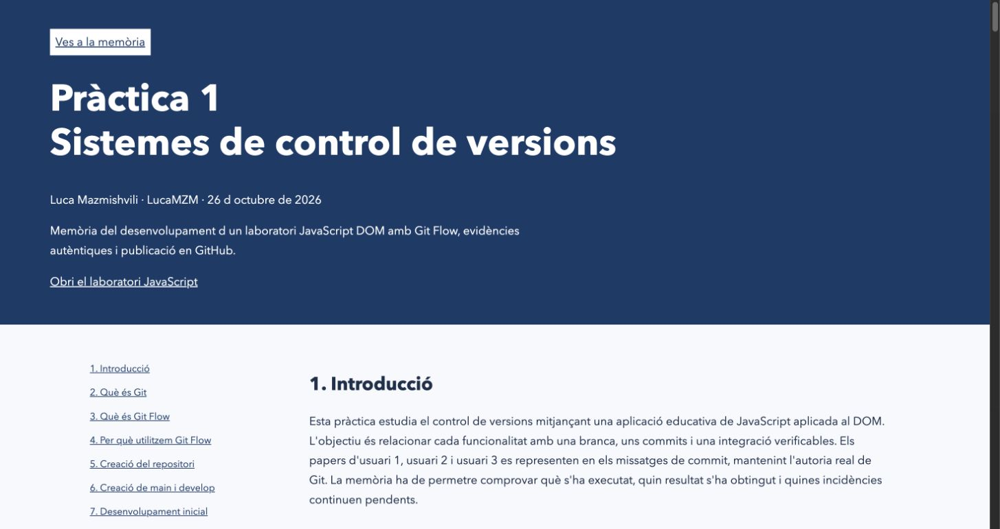
Ordre i eixida registrada 071-pages-worktree
Registre autèntic; no és una captura de terminal.
Data UTC: 2026-10-26T11:32:45.315128+00:00 $ git worktree add --orphan -b gh-pages /Users/lucamazmi/Desktop/ming/javascript-dom-gitflow-pages Preparing worktree (new branch 'gh-pages') Codi de retorn: 0 $ git status --short --branch ## main HEAD: 40d3cd653bd3f151c3de38d9619be119407dd4b5Obri el registre complet
Ordre i eixida registrada 078-pages-settings
Registre autèntic; no és una captura de terminal.
Data UTC: 2026-10-26T11:34:35.737153+00:00
$ gh api repos/LucaMZM/javascript-dom-gitflow/pages
{"url":"https://api.github.com/repos/LucaMZM/javascript-dom-gitflow/pages","status":null,"cname":null,"custom_404":false,"html_url":"https://lucamzm.github.io/javascript-dom-gitflow/","build_type":"legacy","source":{"branch":"gh-pages","path":"/"},"public":true,"protected_domain_state":null,"pending_domain_unverified_at":null,"https_enforced":true}
Codi de retorn: 0
$ git status --short --branch
## main
M evidencias/github/21-project-proces.png
M evidencias/registre.jsonl
?? evidencias/github/16-release-v1.png
?? evidencias/terminal/071-pages-worktree.txt
?? evidencias/terminal/072-develop-worktree.txt
?? evidencias/terminal/073-sync-docs-correct.txt
?? evidencias/terminal/074-pages-stage.txt
?? evidencias/terminal/075-pages-commit.txt
?? evidencias/terminal/076-push-pages.txt
?? evidencias/terminal/077-pages-config.txt
HEAD: 40d3cd653bd3f151c3de38d9619be119407dd4b5
Obri el registre completOrdre i eixida registrada 083-http-curl-verification
Registre autèntic; no és una captura de terminal.
Data UTC: 2026-10-26T11:36:22.101557+00:00
$ python3 /Users/lucamazmi/Desktop/ming/verify_http.py
{
"dateUTC": "2026-10-26T11:36:22.061001+00:00",
"links": [
{
"url": "https://github.com/LucaMZM/javascript-dom-gitflow",
"returncode": 0,
"response": "200\thttps://github.com/LucaMZM/javascript-dom-gitflow",
"error": ""
},
{
"url": "https://lucamzm.github.io/javascript-dom-gitflow/",
"returncode": 0,
"response": "200\thttps://lucamzm.github.io/javascript-dom-gitflow/",
"error": ""
},
{
"url": "https://lucamzm.github.io/javascript-dom-gitflow/app/",
"returncode": 0,
"response": "200\thttps://lucamzm.github.io/javascript-dom-gitflow/app/",
"error": ""
}
]
}
Codi de retorn: 0
$ git status --short --branch
## main
M evidencias/github/21-project-proces.png
M evidencias/registre.jsonl
?? evidencias/git/13-historial-registrat.png
?? evidencias/git/historial.html
?? evidencias/github/16-release-v1.png
?? evidencias/github/20-branques.png
?? evidencias/pages/
?? evidencias/terminal/071-pages-worktree.txt
?? evidencias/terminal/072-develop-worktree.txt
?? evidencias/terminal/073-sync-docs-correct.txt
?? evidencias/terminal/074-pages-stage.txt
?? evidencias/terminal/075-pages-commit.txt
?? evidencias/terminal/076-push-pages.txt
?? evidencias/terminal/077-pages-config.txt
?? evidencias/terminal/078-pages-settings.txt
?? evidencias/terminal/079-graph-final.txt
?? evidencias/terminal/080-pages-build.txt
?? evidencias/terminal/081-remote-branches.txt
?? evidencias/terminal/082-http-verification.txt
HEAD: 40d3cd653bd3f151c3de38d9619be119407dd4b5
Obri el registre completPublicació GitHub Pages i lliurament
Documentació servida des de gh-pages i / (root).
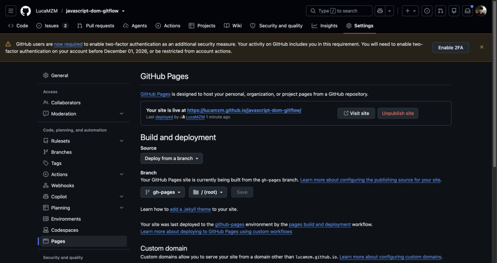
Obri l’aplicació interactiva · Repositori públic · GitHub Project
Descarrega la memòria PDF · Descarrega el DOCX editable
Fonts i recursos
Estat final del Project
Les huit tasques estan en Done; Todo i In Progress estan buits. Es conserva també la captura intermèdia del procés.
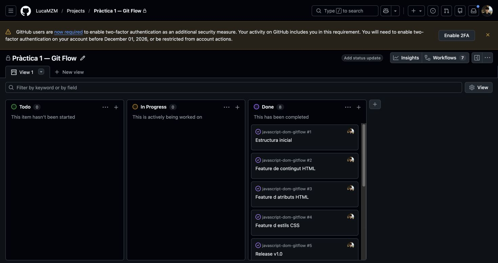
Registre cronològic complet
Les ordres executades es poden auditar amb els seus resultats, incloses incidències i recuperacions.
- 001-init
- 002-tools
- 003-create-repository
- 004-bootstrap-commit
- 005-main-commit
- 006-develop
- 007-before-home
- 008-home-files
- 009-home-stage
- 010-home-commit
- 011-content-branch
- 012-first-push
- 013-content-check
- 014-content-stage
- 015-content-commit
- 016-before-content-merge
- 017-content-switch
- 018-content-merge
- 019-attrs-branch
- 020-attrs-check
- 021-attrs-stage
- 022-attrs-commit
- 023-before-attrs-merge
- 024-attrs-switch
- 025-attrs-merge
- 026-css-branch
- 027-css-check
- 028-css-stage
- 029-css-commit
- 030-before-css-merge
- 031-css-switch
- 032-css-merge
- 033-release-branch
- 034-release-check
- 035-release-stage
- 036-release-commit
- 037-release-graph
- 038-main-switch
- 039-release-main
- 040-tag
- 041-develop-switch
- 042-release-develop
- 043-hotfix-main
- 044-hotfix-branch
- 045-hotfix-check
- 046-hotfix-stage
- 047-hotfix-commit
- 048-hotfix-diff
- 049-hotfix-switch
- 050-hotfix-main
- 051-hotfix-tag
- 052-hotfix-develop-switch
- 053-hotfix-develop
- 054-final-graph
- 055-main-final
- 056-push-flow
- 057-push-tags
- 058-release-github
- 059-hotfix-release
- 060-close-structure
- 061-close-content
- 062-close-attributes
- 063-close-css
- 064-close-release
- 065-close-hotfix
- 066-evidence-stage
- 067-evidence-commit
- 068-develop-docs
- 069-sync-docs
- 070-return-main
- 071-pages-worktree
- 072-develop-worktree
- 073-sync-docs-correct
- 074-pages-stage
- 075-pages-commit
- 076-push-pages
- 077-pages-config
- 078-pages-settings
- 079-graph-final
- 080-pages-build
- 081-remote-branches
- 082-http-verification
- 083-http-curl-verification
- 084-pages-built
- 085-environment
- 086-repository-public
- 087-close-pages
- 088-close-docs
- 089-issues-final
- 090-delivery-commit-stage
- 091-upload-release
- 092-develop-delivery
- 093-pages-delivery-stage
- 094-pages-delivery-commit
- 095-push-delivery
- 096-release-assets
- 097-final-pages-build
- 098-pdf-http
- 099-docx-http